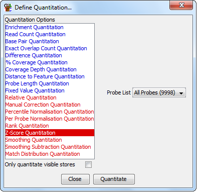

The Z-Score quantitaion requires that you have quantitated your data already using one of the other quanitation methods. It is a way of matching data which are roughly normally distributed but with different variances.

The z-score is a measure of deviation from the mean given the standard deviation. Traditional z-scores simply convert each value into the number of standard deviations from the mean.
The Z-Score used in this quantitation is the modified Z-Score proposed by Inglewicz and Hoaglin. Instead of being based on the mean it uses the median, and instead of standard deviation it used the median of absolute deviation about the median (MAD). MAD is more stable to the effects of small numbers of outliers which are often seen in HTS data.
Generally z-scores with an absolute value of >3.5 are considered potential outliers from a normal distribution.
You can choose which probe list you use for the Quantitation